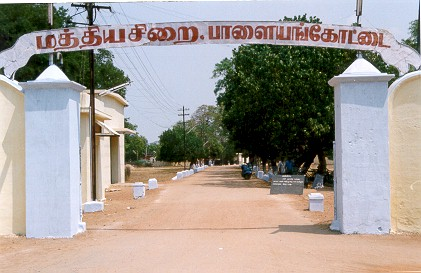
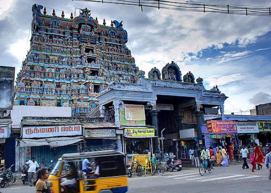
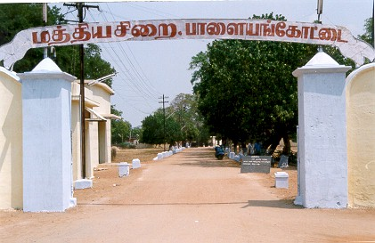
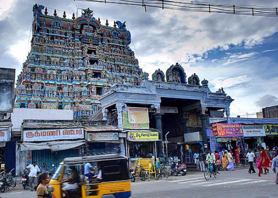

Tirunelveli
Tirunelveli District, situated in the south of Tamil Nadu, has a long history and heritage of more than 3200 years. Tirunelveli is the ‘Green Energy Capital’ of Tamil Nadu with more than 25% of state’s total installed wind energy capacity. The district is also an emerging industrial hub. It is also the land of Ainthinai (five themes), a term that denotes the five major emotional themes of Sangam literature, which is also connected with the five unique landscapes and heritage of ancient Tamil civilisation. The district as a rich heritage. The Porunai civilisation dates back to 3200 years as per the recent carbon dating analysis of archaeological excavation which has yielded the date of 1155 BC. The recent documented account of the region is in the Devaram hymns, generally ascribed to 7th century AD. Various inscriptions (526 nos till 1912) has been identified in the region of which more than 100 are from Tirunelveli town alone and all of them are of post 11th century accounts. Tirunelveli was a chief town of the Pandyas to the south of their capital. When the Pandya country came under the Imperial Cholas, the Pandya country was known as Rajaraja Valanadu since 991 A.D. It became Rajaraja Mandalam in 1012 AD and was re-christened as Rajaraja Pandinadu since 1022 A.D. The present Tirunelveli district comprised the Mudikonda Cholavalanadu. The Valanadu was divided into many nadus and Kurrams. The Nadus and Kurrams as evidenced from the inscriptions of the district are Kilvembu nadu (Tirunelveli and Sevalapperi). Melvembunadu (Chernmahadevi and Suthamalli), Thiruvazhuthi Valanadu (Karukkurichi), Mullinadu, (Ambasamudram and Kallidaikurichi), Anmanadu (Cholapuram), Vanavan nadu (Kalakadu), The Kurrams, mentioned are Tirukkanaper Kurram and Millali Kurram.

 


